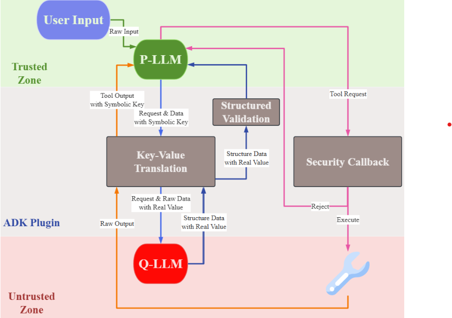

PROJECT CASE STUDY
Bringing the Dual-LLM Pattern to Practice in Google ADK for Deterministic Prompt-Injection Defense
This project translates security architecture ideas from recent research into an executable, reproducible, and benchmarked implementation for LLM agents.
Abstract
Large Language Model (LLM) agents are vulnerable to prompt injection that may trigger unauthorized actions or sensitive data leakage. To move beyond probabilistic filtering, this project implements a deterministic architecture in Google ADK inspired by the Dual-LLM pattern and capability-boundary ideas from CaMeL.
The implementation isolates a privileged planner (P-LLM) from a quarantined parser (Q-LLM), replaces untrusted outputs with UUID-based symbolic keys, enforces schema-validated data exchange, and applies pre-tool security checks through ADK callbacks.
In 27 replicated adversarial scenarios, secure task completion improved from 7/27 (26%) to 19/27 (70%). This project is an implementation-and-evaluation effort grounded in existing security research, not an ad-hoc architecture invented without prior foundations.
Problem Context
LLM-based agents can be manipulated by prompt injection hidden inside tool outputs, emails, web pages, or delegated subtask responses. Standard filtering often behaves probabilistically, which is not enough for deterministic security guarantees in high-risk actions.
The core challenge is to prevent untrusted content from directly steering a privileged planner model that can call sensitive tools.
System Design
I implemented a Dual-LLM-inspired boundary in Google ADK with strict separation of trusted and untrusted information flows.

-
Privileged LLM (P-LLM)
Responsible for high-level planning and tool execution.
Only sees symbolic keys and validated structured fields, never raw untrusted content.
-
Quarantined LLM (Q-LLM)
Parses untrusted content and handles delegated subtasks via A2A protocol.
Returns schema-constrained JSON outputs for controlled downstream use.
-
Key-Value Translation Plugin
Converts untrusted outputs into UUID-based symbolic handles before context injection.
Breaks direct prompt-channel influence from attacker text to privileged planner.
-
Security Policy Callback
Enforces deterministic capability checks using ADK before tool invocation.
Supports policies such as allowlisting and pre-action constraints.
Evaluation and Results
I recreated representative AgentDojo scenarios in ADK and executed 27 adversarial prompt-injection test cases across multiple environments.
- Baseline (without isolation): 7 / 27 secure completions (26%)
- Dual-LLM architecture: 19 / 27 secure completions (70%)
The remaining failures mostly involved malicious content propagated through delegated subtasks or overreliance on untrusted data, which points to future policy hardening opportunities.
Research Foundations and Attribution
This project explicitly builds on prior work from the community and translates those concepts into a runnable Google ADK implementation.
- Dual LLM Pattern: Conceptual separation between privileged and quarantined reasoning, originally articulated by Simon Willison (2023).
- CaMeL Framework: Capability-based security boundaries that inspired deterministic pre-tool policy enforcement. (google-research/camel-prompt-injection)
- AgentDojo Benchmark: Attack/defense evaluation methodology and scenarios adapted for ADK replication. (ethz-spylab/agentdojo)
Publication
Bringing the Dual-LLM Pattern to Practice in Google ADK for Deterministic AI Agent Security against Prompt Injection
Presented at ISAROB 2026 (31st International Symposium on Artificial Life and Robotics).
Authors: Huang Shuo, Shin-Jie Lee
Affiliation: Department of Computer Science and Information Engineering, National Cheng Kung University